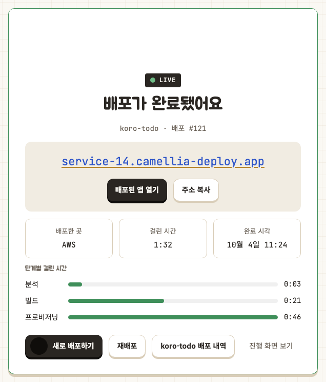

10
Results & Limitations
Results
- 한 번 빌드한 이미지를 AWS와 온프레미스에 배포하고 전환
- 실제 서비스 URL이 정상인 경우에만 배포 완료
- 같은 요청이 반복되거나 동시에 들어와도 한 번만 실행
- Agent 재시작 후 기존 컨테이너와 Tunnel 자동 복구
- 온프레미스 장애 시 검증된 AWS 환경으로 자동 전환
- 13개 시나리오와 61회 실제 배포로 주요 흐름 확인
Limitations
- 1주 해커톤 범위의 프로토타입으로 장기 운영 검증은 부족함
- 장애 전환은 미리 배포·검증된 환경이 있을 때만 동작함
- DB와 파일 등 상태 데이터는 환경 사이에서 동기화하지 않음
- 온프레미스는 단일 애플리케이션 컨테이너 배포 중심
- DNS와 외부 서비스 상태에 따라 전환이 지연될 수 있음
- 대규모 사용자와 장시간 부하 검증은 추가로 필요함

What I Learned
배포 명령이 성공했다는 사실과 사용자가 서비스를 정상적으로 이용할 수 있다는 사실은 다릅니다. 실제 URL을 기준으로 완료를 판단하고, 새 환경이 실패했을 때 기존 서비스를 지키는 흐름까지 설계해야 배포 기능이 완성된다는 점을 배웠습니다.